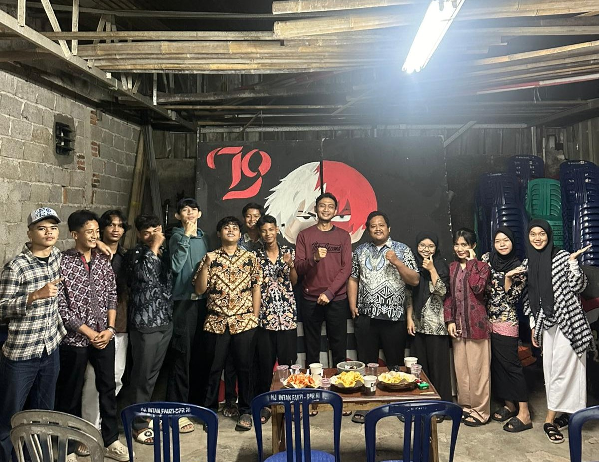
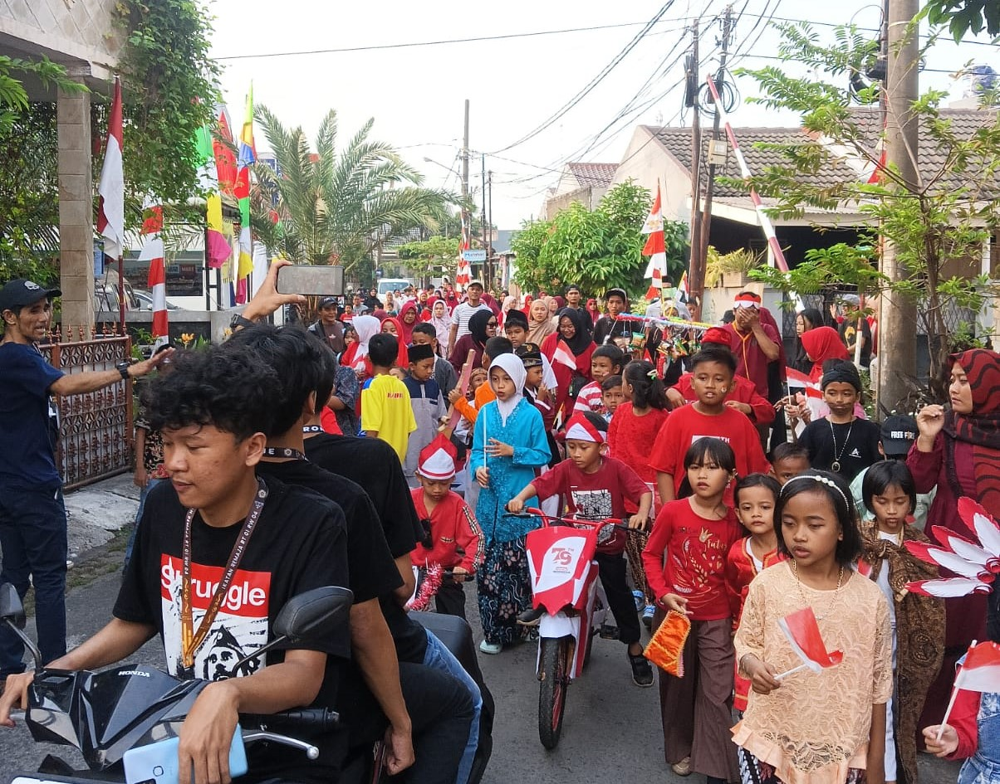
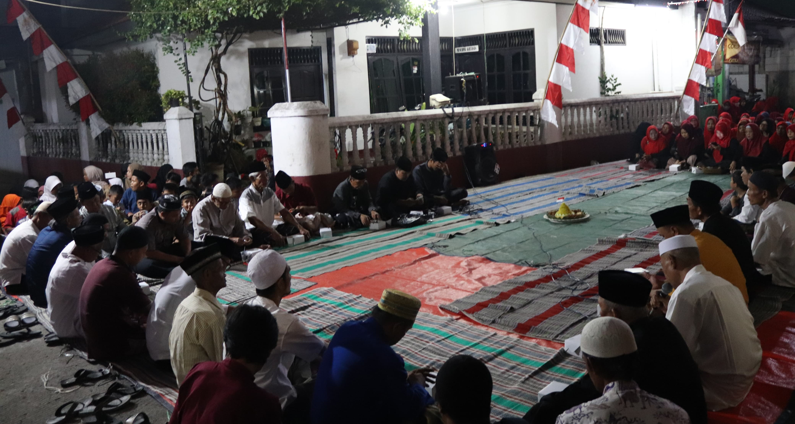
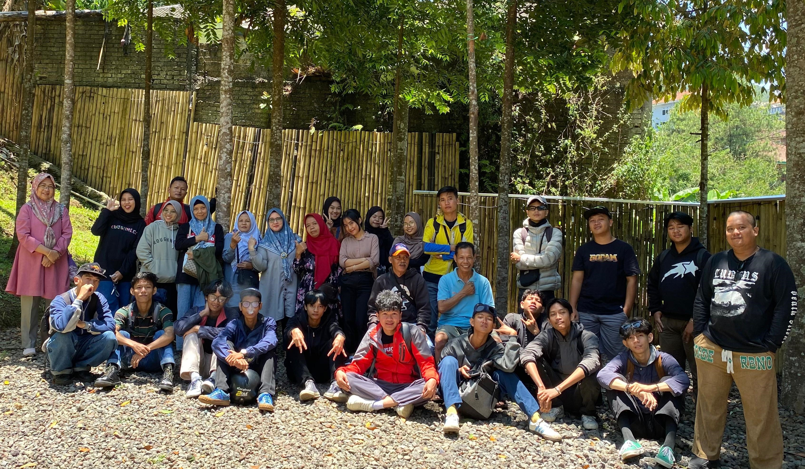
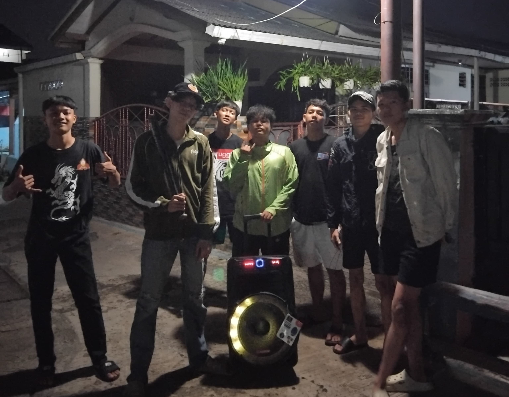
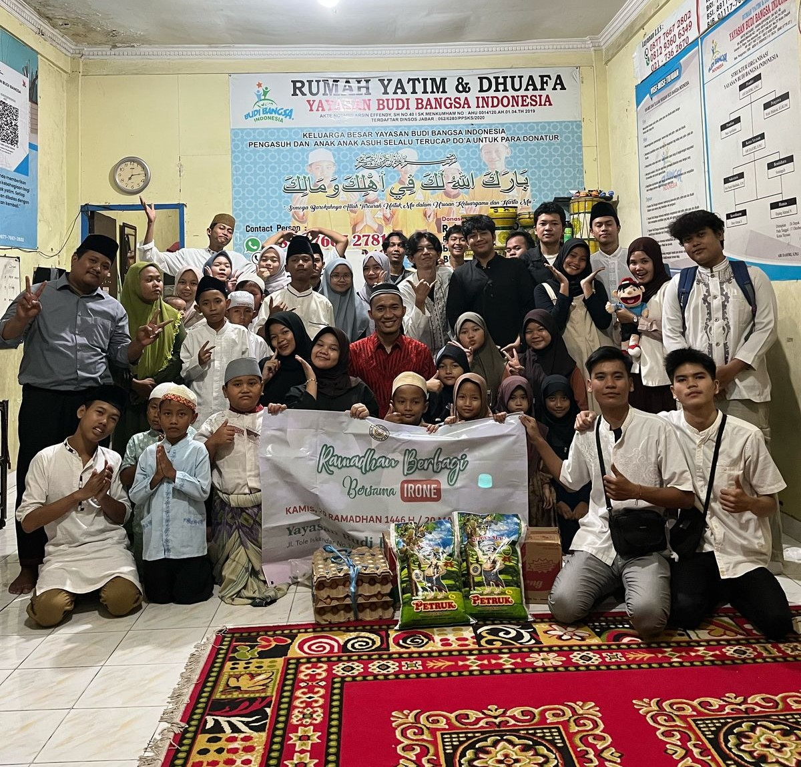

RAPAT KEGIATAN ACARA
Pada hari Sabtu malam, Karang Taruna Irone RT 01 RW 04 mengadakan rapat koordinasi yang bertempat di aula serbaguna lingkungan setempat. Rapat ini diselenggarakan dalam rangka persiapan menyambut Hari Ulang Tahun Republik Indonesia ke-80 yang jatuh pada tanggal 17 Agustus. Rapat tersebut dipimpin langsung oleh Ketua Karang Taruna, dengan dihadiri oleh para pengurus, perwakilan ibu-ibu PKK, tokoh masyarakat, serta pemuda dan pemudi yang tergabung dalam Karang Taruna. Fokus utama rapat adalah untuk membahas rangkaian kegiatan perlombaan yang akan digelar dalam memeriahkan peringatan HUT RI di wilayah RT 01 RW 04. Dalam suasana penuh semangat nasionalisme, rapat dimulai dengan sambutan dari Ketua RT yang menyampaikan pentingnya menjadikan momentum kemerdekaan sebagai ajang untuk memperkuat kebersamaan, mempererat tali silaturahmi, serta menanamkan rasa cinta tanah air kepada generasi muda. Selanjutnya, peserta rapat secara aktif mengemukakan berbagai ide lomba yang dapat melibatkan seluruh kalangan warga, dari anak-anak hingga orang tua. Beberapa lomba yang disepakati antara lain lomba makan kerupuk, balap karung, tarik tambang, lomba membawa kelereng dengan sendok, lomba joget balon, hingga lomba memasak bagi ibu-ibu. Untuk menambah semarak acara, juga direncanakan adanya lomba kostum kemerdekaan dan pentas seni malam hari yang akan menampilkan kreasi dari warga setempat. Panitia inti pun dibentuk dalam rapat tersebut, dengan masing-masing bidang seperti konsumsi, perlengkapan, keamanan, dan dokumentasi ditugaskan kepada anggota yang berbeda. Salah satu bahasan penting adalah teknis pelaksanaan lomba, termasuk sistem pendaftaran peserta, penjadwalan lomba agar tidak saling tumpang tindih, serta peraturan yang harus dipatuhi oleh seluruh peserta demi menjaga sportivitas. Selain itu, dibahas pula rencana pengumpulan dana melalui iuran sukarela warga, penjualan kupon bazar, dan pencarian sponsor dari usaha-usaha kecil di lingkungan sekitar. Panitia juga akan mengirimkan surat resmi kepada ketua RW dan kelurahan sebagai bentuk koordinasi kegiatan dan permohonan izin penggunaan fasilitas umum. Rapat berlangsung dengan antusiasme tinggi dan semangat kebersamaan yang luar biasa. Setiap peserta menunjukkan komitmen untuk menjadikan peringatan HUT RI tahun ini lebih meriah dan berkesan daripada tahun-tahun sebelumnya. Acara ditutup dengan pembacaan kesimpulan hasil rapat dan penetapan jadwal pertemuan lanjutan guna mematangkan persiapan. Semangat gotong royong dan partisipasi aktif dari seluruh warga menjadi modal utama dalam menyukseskan acara ini, yang tidak hanya sebagai bentuk penghormatan terhadap perjuangan para pahlawan, tetapi juga sebagai sarana mempererat rasa persaudaraan dalam kehidupan bermasyarakat di RT 01 RW 04.
NGOBROL BARENG VOL.1
Pada hari Minggu Malam, Karang Taruna Irone RT 01 RW 04 mengadakan sebuah kegiatan santai namun penuh makna dengan tajuk “Ngobrak” (Ngobrol Bareng), yang bertempat di halaman rumah salah satu sesepuh lingkungan. Acara ini diinisiasi sebagai bentuk jembatan komunikasi antara generasi muda dan para tokoh senior yang telah lama berkecimpung dalam dunia usaha dan kehidupan bermasyarakat. “Ngobrak” menjadi ruang diskusi terbuka di mana para pemuda dapat menyerap ilmu dan pengalaman langsung dari para sesepuh mengenai perjalanan mereka dalam membangun dan mengembangkan usaha dari nol. Suasana pertemuan sangat akrab dan cair, ditemani secangkir teh hangat dan camilan sederhana, menjadikan obrolan terasa lebih hidup dan penuh inspirasi. Dalam sesi utama, beberapa sesepuh membagikan cerita bagaimana mereka memulai usaha kecil-kecilan di masa sulit, dengan modal seadanya namun berbekal tekad dan kejujuran. Mereka menceritakan jatuh bangun dalam berwirausaha, mulai dari berdagang keliling, membuka warung, hingga menjalankan jasa keterampilan tertentu. Para sesepuh menekankan bahwa kesuksesan bukanlah hasil instan, melainkan buah dari kerja keras, kesabaran, dan kemampuan membaca peluang di sekitar. Diskusi pun mengalir ke pembahasan mengenai jenis-jenis usaha yang berpotensi dikembangkan di lingkungan RT, seperti usaha kuliner rumahan, jasa servis, kerajinan lokal, serta digitalisasi usaha kecil melalui media sosial. Kegiatan “Ngobrak” tidak hanya menjadi ajang bertukar pikiran, tetapi juga menumbuhkan semangat dan motivasi baru di kalangan pemuda Karang Taruna untuk mulai merintis usaha mandiri. Beberapa peserta bahkan mengusulkan dibentuknya kelompok usaha bersama yang bisa dimulai dari skala kecil dengan pendampingan para sesepuh sebagai mentor. Di akhir acara, para peserta menyepakati untuk menjadikan “Ngobrak” sebagai agenda rutin bulanan, dengan topik berbeda yang tetap fokus pada pembangunan ekonomi kreatif di lingkungan RT 01 RW 04. Acara ini menjadi contoh nyata bahwa sinergi antara pengalaman masa lalu dan semangat muda masa kini mampu menciptakan gagasan-gagasan baru demi kemajuan bersama.

NGOBROL BARENG VOL.2
Dalam rangka mempererat hubungan antar generasi sekaligus menggali gagasan untuk pengembangan kegiatan sosial di lingkungan RT 01 RW 04, Karang Taruna Irone menggelar sebuah forum santai bertajuk “Ngobrak” (Ngobrol Bareng) bersama anggota irone dan bang olis. Acara ini dilaksanakan pada malam hari di teras balai warga, dalam suasana hangat, penuh keakraban, dan kekeluargaan. “Ngobrak” kali ini secara khusus difokuskan pada topik penting, yakni bagaimana membangun kesadaran sosial dan kepedulian warga terhadap sesama melalui program-program sederhana namun berdampak nyata di masyarakat. Para anggota Karang Taruna yang hadir diajak berbagi pengalaman mereka sewaktu masih aktif dalam kegiatan sosial tempo dulu, mulai dari penggalangan bantuan untuk warga yang sakit, kegiatan gotong royong rutin, hingga pembentukan lumbung pangan warga yang dulu sempat menjadi tradisi. Dalam diskusi tersebut, bang olis memberikan banyak masukan berharga mengenai pentingnya nilai gotong royong, solidaritas, dan kehadiran nyata di tengah masyarakat, terutama saat ada warga yang sedang mengalami kesulitan. Mereka juga menyampaikan bahwa kegiatan sosial bukan semata tentang bantuan materi, tapi juga soal kepedulian, perhatian, dan kebersamaan. Para pemuda Karang Taruna sangat antusias mendengarkan dan mencatat berbagai ide yang muncul, seperti program “Jumat Berbagi,” pengumpulan pakaian layak pakai, kunjungan ke warga lansia yang tinggal sendiri, serta pembentukan tim tanggap darurat Karang Taruna yang bisa cepat membantu jika ada kejadian mendesak di lingkungan. “Ngobrak” menjadi ruang yang mempertemukan semangat muda dengan kebijaksanaan para anggota, melahirkan ide-ide kegiatan sosial yang lebih terstruktur dan menyentuh kebutuhan nyata warga. Para peserta sepakat bahwa kegiatan sosial ke depan harus lebih inklusif dan melibatkan seluruh elemen masyarakat, mulai dari remaja, ibu rumah tangga, hingga lansia, agar tercipta rasa memiliki dan tanggung jawab bersama. Kegiatan ini ditutup dengan semangat optimisme dan kesepakatan untuk menjadikan “Ngobrak” sebagai program rutin bulanan yang membahas berbagai isu penting di masyarakat secara terbuka dan solutif. Melalui program ini, diharapkan sinergi antar generasi terus terjalin, dan kepedulian sosial warga RT 01 RW 04 semakin tumbuh sebagai fondasi kehidupan bermasyarakat yang harmonis dan berdaya.

MERAYAKAN HARI KEMERDEKAAN
Dalam rangka memperingati Hari Ulang Tahun Republik Indonesia ke-79, Karang Taruna Irone RT 01 RW 04 menyelenggarakan serangkaian kegiatan meriah dengan mengusung tema besar “Karnaval Kemerdekaan: Merajut Kebhinekaan, Menjaga Persatuan”. Kegiatan ini menjadi momentum penting bagi seluruh warga untuk mengekspresikan semangat nasionalisme melalui kreativitas, kebersamaan, dan semarak budaya lokal. Puncak acara digelar pada tanggal [isi tanggal], dengan mengadakan karnaval keliling lingkungan yang melibatkan seluruh elemen masyarakat, mulai dari anak-anak, remaja, ibu-ibu PKK, hingga para sesepuh. Setiap kelompok peserta menampilkan beragam kostum unik yang mencerminkan keberagaman budaya Indonesia, mulai dari pakaian adat nusantara, atribut perjuangan kemerdekaan, hingga kreasi modern bertema merah putih. Karnaval dimulai dari titik kumpul di balai warga dan menempuh rute mengelilingi wilayah RT 01 RW 04, diiringi dengan marching band lokal dan iringan musik tradisional. Warga dengan antusias memenuhi pinggir jalan untuk menyaksikan parade yang penuh warna ini. Selain menampilkan kostum, peserta juga membawa kendaraan hias, sepeda yang dihias dengan ornamen kemerdekaan, serta pertunjukan teatrikal singkat yang menggambarkan perjuangan para pahlawan. Kegiatan ini tidak hanya menjadi ajang hiburan, tetapi juga edukasi sejarah dan budaya yang dikemas secara kreatif dan menarik, terutama bagi generasi muda. Tak hanya karnaval, dalam rangkaian acara juga diselenggarakan berbagai lomba khas 17-an, seperti balap karung, panjat pinang, dan tarik tambang, serta stan kuliner warga yang menyajikan makanan tradisional sebagai bentuk dukungan terhadap UMKM lokal. Kegiatan ini ditutup dengan malam puncak perayaan yang diisi oleh pentas seni warga, pembagian hadiah lomba, dan pemutaran film perjuangan. Ketua Karang Taruna dalam sambutannya menyampaikan bahwa kegiatan ini bukan hanya bentuk perayaan, melainkan juga sarana memperkuat solidaritas dan semangat gotong royong antarwarga. Dengan semangat “Karnaval Kemerdekaan,” warga Irone RT 01 RW 04 berhasil menciptakan suasana peringatan HUT RI yang meriah, bermakna, dan penuh kebanggaan sebagai anak bangsa.

TASYAKURAN RT01/04
Sebagai bagian dari rangkaian peringatan Hari Ulang Tahun Republik Indonesia ke-79, warga RT 01 RW 04 mengadakan malam tasyakuran yang dilaksanakan pada malam tanggal 16 Agustus di halaman balai warga. Kegiatan ini menjadi momen sakral dan penuh makna bagi seluruh warga sebagai wujud rasa syukur atas nikmat kemerdekaan yang telah diperjuangkan oleh para pahlawan bangsa. Dengan suasana yang khidmat namun tetap hangat dan penuh kebersamaan, malam tasyakuran diawali dengan pembacaan doa bersama yang dipimpin oleh tokoh agama setempat, memohon agar bangsa Indonesia, khususnya warga RT 01 RW 04, senantiasa diberikan kedamaian, kesejahteraan, dan persatuan. Acara dilanjutkan dengan sambutan dari Ketua RT, Ketua RW, serta tokoh masyarakat dan Karang Taruna, yang menekankan pentingnya menjaga nilai-nilai kemerdekaan dalam kehidupan sehari-hari, terutama melalui semangat gotong royong, kepedulian sosial, dan persatuan antarwarga. Dalam momen ini pula, warga diajak untuk mengenang jasa para pahlawan serta menanamkan nilai-nilai nasionalisme pada generasi muda. Suasana semakin hangat dengan adanya sesi ramah tamah antarwarga yang diselingi dengan penampilan seni budaya lokal, seperti pembacaan puisi kemerdekaan, lantunan lagu perjuangan, dan penampilan hadrah oleh pemuda setempat. Tak ketinggalan, hidangan sederhana namun penuh makna disajikan secara prasmanan hasil gotong royong warga, mulai dari tumpeng, nasi liwet, hingga aneka jajanan tradisional. Kegiatan malam tasyakuran ini tidak hanya menjadi sarana spiritual dan refleksi bersama, tetapi juga memperkuat hubungan antarwarga serta membangun rasa cinta tanah air yang lebih mendalam. Dengan penuh harapan, seluruh warga menyambut HUT RI ke-79 ini sebagai momentum untuk terus melangkah maju, menjaga nilai-nilai kebhinekaan, dan membangun lingkungan yang harmonis dan berdaya. Malam tasyakuran pun ditutup dengan penuh syukur dan semangat baru untuk terus berkarya bagi lingkungan dan bangsa.

REFRESHING VOL.1
Setelah sukses melaksanakan kegiatan rekreasi bersama ke villa di kawasan Puncak, Karang Taruna Irone RT 01 RW 04 bersama ibu-ibu PKK menggelar acara pembubaran panitia sebagai bentuk apresiasi dan penutup resmi atas kerja keras seluruh tim yang terlibat. Acara pembubaran panitia ini dilaksanakan secara sederhana namun penuh kehangatan di rumah salah satu anggota PKK, dihadiri oleh panitia, peserta kegiatan, serta tokoh masyarakat setempat. Dalam suasana santai dan penuh canda tawa, para panitia mengenang kembali momen-momen seru dan menyenangkan selama perjalanan, mulai dari keberangkatan, kegiatan bersama di villa, sesi permainan, hingga acara malam keakraban yang meninggalkan kesan mendalam bagi semua peserta. Ketua panitia dalam sambutannya menyampaikan rasa terima kasih yang sebesar-besarnya kepada seluruh anggota panitia atas kerja sama yang solid, serta kepada seluruh peserta, khususnya ibu-ibu PKK, yang telah ikut serta dengan penuh semangat dan kebersamaan. Ia juga menyampaikan bahwa keberhasilan kegiatan ini adalah bukti nyata bahwa dengan gotong royong dan niat baik, semua hal bisa berjalan lancar dan menyenangkan. Pembubaran panitia juga diisi dengan sesi evaluasi singkat, di mana disampaikan masukan dan saran untuk kegiatan serupa di masa mendatang agar bisa lebih baik lagi. Beberapa ibu juga menyampaikan harapan agar kegiatan jalan-jalan seperti ini bisa menjadi agenda rutin, karena selain menyegarkan pikiran, juga mempererat tali silaturahmi antarwarga. Sebagai penutup, acara dilanjutkan dengan makan bersama dan pembagian kenang-kenangan kecil untuk panitia sebagai bentuk apresiasi. Suasana kekeluargaan sangat terasa sepanjang acara, memperlihatkan bahwa kegiatan sederhana seperti ini mampu membawa dampak positif bagi kehidupan sosial warga. Pembubaran panitia ini bukan sekadar penutup kegiatan, melainkan juga menjadi awal semangat baru untuk merancang kegiatan positif lainnya di masa mendatang. Dengan semangat kebersamaan yang terus terjaga, warga RT 01 RW 04 semakin kompak dan harmonis dalam menjalani kehidupan bermasyarakat.

RONDA KAMPUNG
Dalam upaya meningkatkan keamanan lingkungan sekaligus menumbuhkan rasa tanggung jawab sosial di kalangan generasi muda, Karang Taruna Irone RT 01 RW 04 menginisiasi program ronda kampung yang melibatkan langsung para remaja sebagai pelaksana utama. Kegiatan ini dilaksanakan secara bergilir setiap malam, dengan jadwal yang telah diatur oleh pengurus Karang Taruna bekerja sama dengan pengurus RT. Ronda kampung ini tidak hanya berfungsi sebagai upaya preventif terhadap potensi gangguan keamanan, tetapi juga menjadi wadah pembentukan karakter, kedisiplinan, dan solidaritas antar sesama remaja. Para peserta ronda berkumpul di pos kamling pada pukul 22.00 WIB dan menjalankan patroli keliling lingkungan hingga dini hari, memastikan situasi tetap aman, lampu jalan menyala, serta tidak ada aktivitas mencurigakan di sekitar wilayah RT 01 RW 04. Selain kegiatan patroli, program ronda ini juga diisi dengan diskusi ringan, sharing antaranggota, hingga kegiatan positif lainnya seperti bersih-bersih pos ronda dan belajar membuat laporan harian ronda. Hal ini membuat kegiatan ronda tidak terasa membosankan, melainkan menjadi momen kebersamaan yang ditunggu-tunggu oleh para remaja. Untuk menjaga semangat, setiap pekan diadakan penilaian kelompok ronda terbaik, dan kelompok yang paling aktif akan mendapatkan penghargaan sederhana dari Karang Taruna sebagai bentuk apresiasi. Tokoh masyarakat dan orang tua menyambut baik program ini, karena dinilai mampu menghidupkan kembali budaya ronda yang mulai luntur, sekaligus melatih generasi muda untuk lebih peduli terhadap lingkungannya. Ketua Karang Taruna dalam sambutannya menyampaikan bahwa ronda kampung adalah simbol dari gotong royong dan tanggung jawab kolektif, yang harus dijaga oleh semua lapisan masyarakat, termasuk remaja. Ia juga berharap agar kegiatan ini bisa terus berlanjut dan menjadi budaya positif yang mengakar di tengah masyarakat. Program ronda kampung oleh remaja Karang Taruna ini terbukti bukan hanya menjaga keamanan malam hari, tetapi juga membangun karakter kepemimpinan, kedisiplinan, dan rasa memiliki terhadap kampung halaman mereka.

IRONE BERBAGI VOL.1
Sebagai bentuk kepedulian sosial dan wujud nyata semangat gotong royong di lingkungan RT 01 RW 04, Karang Taruna Irone menginisiasi program “Irone Berbagi Volume 1” yang ditujukan untuk membantu anak-anak panti asuhan di kawasan Tole Iskandar. Program ini merupakan langkah awal dari rangkaian kegiatan sosial yang berkelanjutan, dengan tujuan meringankan beban dan memberikan kebahagiaan bagi anak-anak yang membutuhkan. Pada pelaksanaan perdana program ini, tim Karang Taruna bersama sejumlah relawan mengunjungi panti asuhan tersebut dengan membawa berbagai bantuan berupa paket sembako, perlengkapan sekolah, pakaian layak pakai, serta kebutuhan dasar lainnya yang sangat bermanfaat bagi para penghuni panti. Kegiatan “Irone Berbagi Volume 1” tidak hanya berupa penyerahan bantuan material, tetapi juga mengadakan sesi interaktif yang hangat dan penuh keceriaan. Para relawan mengajak anak-anak bermain, bernyanyi, dan berbagi cerita agar suasana menjadi lebih hidup dan menghibur. Momen ini menjadi kesempatan berharga bagi warga Karang Taruna untuk mendekatkan diri sekaligus memberikan semangat dan perhatian yang sangat berarti bagi anak-anak panti. Ketua Karang Taruna dalam sambutannya menyampaikan harapan agar program ini dapat terus berjalan dan berkembang, sehingga hubungan antara warga RT 01 RW 04 dengan panti asuhan bisa semakin erat dan memberikan manfaat yang lebih luas. Selain itu, program ini juga mendorong partisipasi aktif seluruh warga untuk ikut serta dalam aksi sosial, baik melalui donasi maupun dukungan lainnya. “Irone Berbagi Volume 1” diharapkan menjadi inspirasi bagi komunitas sekitar untuk semakin peduli terhadap sesama, terutama mereka yang kurang beruntung. Kesuksesan kegiatan ini membuka jalan bagi berbagai program serupa di masa mendatang, yang akan lebih terorganisir dan menyasar berbagai kelompok masyarakat yang membutuhkan bantuan. Dengan semangat kebersamaan dan kepedulian, Karang Taruna Irone berkomitmen untuk terus menjadi garda terdepan dalam menciptakan lingkungan yang harmonis dan penuh kasih sayang.